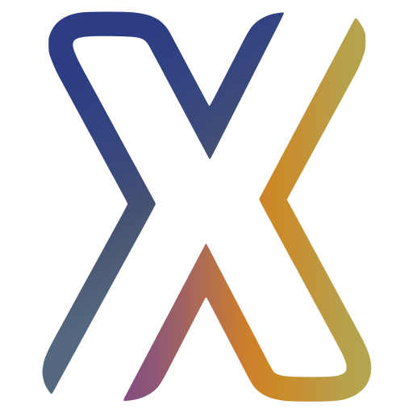

bg
--bg
#0B0E14
ResultX Labs / Xscore
O sistema de marca para interfaces de crédito. Fundamentos, componentes e aplicações em um lugar.
Ação
Dourado
Inteligência
Roxo
Leitura
Grafite e luz
Uma escala tonal para organizar o canvas, o conteúdo e as divisões.
--bg
#0B0E14
--surface-1
#161B26
--surface-2
#1C2333
--surface-3
#232B3B
--surface-4
#2A3444
--border
#2A3444
--border-focus
#c4993b
Cada acento tem um papel estável na hierarquia da marca.
--gold
#c4993b
--gold-ink
#c4993b
--on-gold
#1a1408
--intel
#6f32b1
--intel-on-dark
#c084fc
Leitura clara, do título ao detalhe.
Texto principal organiza o conteúdo.
Texto secundário traz o contexto.
Metadados complementam a leitura.
A cor reforça a mensagem. O texto continua sendo a informação.
Resultado disponível.
--successHá um ponto para conferir.
--warningConfira a informação e tente novamente.
--dangerContexto complementar.
--infoAmostras de linguagem visual com conteúdo fictício; não definem estados de um produto.
Receitas existentes na fonte. Use o destaque com parcimônia.
--gradient-action--gradient-intel--gradient-surfacePadrões financeiros compostos apenas por contratos existentes; valores e situações são fictícios.
Exemplo fictício
R$ 12.480,00
Numerais tabulares e unidade explícita.
Existe · DataTable
Composição de dados tabulares com cabeçalhos, ordenação e estados de carregamento, vazio e erro. Formatação e semântica financeira pertencem à composição.
Existe · StatCard
Valor, unidade, ausência, atualização e estados de carregamento e erro.
Planejado · Field e Choice existentes
Os campos e escolhas existem; um padrão compartilhado de filtros combinados ainda não existe.
Existe · StatusBadge
Rótulo textual com variante semântica. Categorias especializadas de crédito não são definidas pelo contrato.
Planejado · Button e ConfirmDialog existentes
Há contratos para ação e confirmação; uma composição própria de etapas de aprovação ainda não existe.
Existe · EmptyState
Composição com mensagem contextual e próximo passo para ausência de conteúdo.
Existe · ErrorState
Mensagem de erro com contexto, próximo passo e ação quando aplicável.
Existe · DataTable, StatCard e EmptyState
Estado ocupado indicado pela área que está atualizando, com conteúdo textual apropriado.
Adotado no Xscore · sem contrato próprio
Resumo do que o birô informou, no topo da ficha. Composição registrada a partir do produto; não é um componente do DS.
O que o birô informou, no topo da ficha. Composição adotada no Xscore (#360, 24/11); exemplo com dados fictícios.
Resumo da análise · laudo Birô A de 18/11/2026
por Pessoa Exemplo · 20/11/2026 14:05
Informação: Score do birô
Birô A 640 (0–1000) · Birô B 7 (1–10, escala não confirmada)
Sem apontamento: Protestos
nenhum registro
Atenção: Pendências financeiras
2 · R$ 1.234,50
Informação: Tempo de empresa
4 anos · desde 03/2022
Sem apontamento: Situação cadastral
ativa
Sem dado: Falência, ações e cheques
o birô não informou: falência, ação judicial, cheque sem fundo
Exemplo fictício nos quatro estados de item. Na vitrine, os links levam às regras; no produto, ao laudo completo.
Aviso quando a leitura do laudo falha
Não foi possível montar o resumo do laudo agora.
Os dados do birô continuam no laudo. Abrir o laudo completo
Não usar
O modelo original de 23/11 trazia nota de 0 a 1000, régua Negar, Revisão, Restrição e Aprovar, selo “Dentro da política”, mínimos por critério e “limite sugerido pela política”. O Xscore não tem nota única nem fundida (decisão D-0001), e a política vigente não tem faixas nem mínimos. Esses elementos não fazem parte do padrão.
Nome e versão da política, atraso na carteira, legenda dos selos e a versão curta para listas. O modelo fica guardado no repositório só como referência histórica, fora da vitrine.
Situação: adotado no produto Xscore. O DS não tem contrato próprio para este padrão. As peças correspondem aos contratos Card, StatusBadge e Button (link); o aviso de falha é uma composição própria, não o ErrorState. A conformidade dos componentes do produto a esses contratos não foi verificada aqui.
Títulos, leitura e números seguem as famílias oficiais da marca.
Títulos · Sora
Clareza para decidir.
--font-heading'Sora', sans-serif
Corpo · Plus Jakarta Sans
Informação organizada, com espaço para entender o que importa.
--font-body'Plus Jakarta Sans', sans-serif
Dados · Geist Mono
0123456789
R$ 12.480,00
--font-mono'Geist Mono', 'JetBrains Mono', ui-monospace, monospace
--text-display 44px
--text-h1 32px
--text-h2 24px
--text-h3 18px
--text-body 15px
--text-sm 13px
--text-xs 12px
--weight-regular 400
--weight-medium 500
--weight-semibold 600
--weight-bold 700
A marca ainda não publica uma escala semântica de espaçamento.
Os papéis de espaço precisam ser definidos na fonte compartilhada. Esta vitrine não cria tokens de marca nem apresenta uma escala provisória como oficial.
As medidas da moldura editorial organizam apenas esta documentação.
Raios e sombras vêm da folha existente. A presença de um token não dispensa a regra do componente.
| Papel | Valor da fonte | Amostra |
|---|---|---|
--radius-sm | 6px | |
--radius-md | 10px | |
--radius-lg | 14px | |
--radius-xl | 20px | |
--radius-full | 999px |
| Papel | Valor da fonte | Amostra |
|---|---|---|
--shadow-sm | 0 1px 2px rgba(0, 0, 0, 0.3) | |
--shadow-md | 0 4px 12px -4px rgba(0, 0, 0, 0.45) | |
--shadow-lg | 0 16px 40px -20px rgba(0, 0, 0, 0.7) | |
--shadow-gold | 0 8px 20px -8px rgba(196, 153, 59, 0.35) |
O contrato Card pede ausência de sombra em repouso. Tokens de sombra permanecem disponíveis para os contextos apropriados.
Wordmark e símbolo oficiais. Arquivos vetoriais preservam a construção e a proporção.

Os nove contratos são compartilhados. As implementações de referência são reutilizadas por link, com a marca e o tema selecionados.
Existente · Core
Ação, navegação, carregamento e indisponibilidade.
Contrato oficial · Exemplo de referência
Estados descritos conforme a aplicabilidade de cada contrato.
Existente · Core
Rótulo, ajuda, erro associado e foco.
Contrato oficial · Exemplo de referência
Estados descritos conforme a aplicabilidade de cada contrato.
Existente · Core
Agrupamento de conteúdo, tamanhos e estados.
Contrato oficial · Exemplo de referência
Estados descritos conforme a aplicabilidade de cada contrato.
Existente · Core
Estado em texto, reforçado pela cor.
Contrato oficial · Exemplo de referência
Estados descritos conforme a aplicabilidade de cada contrato.
Existente · Core
Valor, ausência, atualização e ação opcional.
Contrato oficial · Exemplo de referência
Estados descritos conforme a aplicabilidade de cada contrato.
Existente · Core
Cabeçalhos, ordenação, teclado e estados externos.
Contrato oficial · Exemplo de referência
Estados descritos conforme a aplicabilidade de cada contrato.
Existente · Core
Contexto, cancelamento e retorno do foco.
Contrato oficial · Exemplo de referência
Estados descritos conforme a aplicabilidade de cada contrato.
Existente · Core
O que aconteceu, próximo passo e ação.
Contrato oficial · Exemplo de referência
Estados descritos conforme a aplicabilidade de cada contrato.
Existente · Core
Checkbox, opção única e alternância com rótulo e estado acessível.
Contrato oficial · Exemplo de referência
Estados descritos conforme a aplicabilidade de cada contrato.
Esta documentação apresenta referências do DS. A adoção e a conformidade de cada produto são verificadas separadamente.
Proporções de referência; não são templates aprovados da marca.
1080 × 1920
1080 × 1080
1200 × 630
LinkedIn 1584 × 396 · cabeçalho de e-mail 600 × 200 · web 728 × 180. A composição própria permanece planejada.
Dezoito capítulos de referência. Diretrizes verificadas e lacunas de marca aparecem de forma explícita.
01 / 18
Clareza para interfaces densas em dados. A hierarquia usa superfícies, tipografia e espaço; a cor distingue ação, inteligência e estado.
02 / 18
Xscore é uma identidade de ResultX Labs. Compartilha os fundamentos e contratos do ResultX DS e mantém tema, tipografia e assets próprios.
03 / 18
O X contornado deriva da marca-mãe. A assinatura traz o X seguido de score. O símbolo isolado atende favicon e avatar; a wordmark atende assinaturas maiores. Use os arquivos oficiais e preserve a proporção.
04 / 18
Dourado identifica ação. Roxo identifica inteligência. Verde, âmbar, vermelho e azul reforçam estados textuais. A tinta sobre um preenchimento usa seu papel próprio.
05 / 18
Sora nos títulos; Plus Jakarta Sans no corpo e na interface; Geist Mono nos dados. Numerais tabulares alinham valores. As fontes desta página são locais e têm licença OFL.
06 / 18
Diretriz editorial da interface: rótulos diretos, frases curtas e instruções com próximo passo. Detalhes complementares ficam recolhidos. A voz de campanha e o posicionamento comercial ainda aguardam consolidação de marca.
07 / 18
O DS fornece utilitários CSS para SVG inline compatíveis com desenhos Lucide, Phosphor e Heroicons; não fornece uma coleção própria de desenhos. Tamanhos: 12, 16, 20, 24, 32 e 40 px; contêineres: 28, 36, 44 e 56 px. O traço usa currentColor e pode receber papéis semânticos existentes. Ícones junto a rótulos são complementares; ícone isolado requer nome acessível, e decoração é ocultada da árvore acessível. Não usar cor como único sinal.
08 / 18
Fundamentos, assinatura e componentes estão documentados aqui. Templates de campanha, e-mail e relatório próprios ainda estão planejados. Amostras visuais não representam peças aprovadas.
09 / 18
A identificação editorial deste sistema é Xscore. O desenho da palavra vem do asset oficial. A grafia não depende de transformações de caixa em CSS.
10 / 18
ResultX oferece a fundação compartilhada. A marca preserva seu dourado de ação, seu roxo de inteligência e sua composição tipográfica nas duas aparências.
11 / 18
Logo vetorizado a partir do arquivo fonte oficial da marca, com contornos traçados e cores amostradas do original. Sobre surface-1 escura (#161B26), a faixa azul do símbolo mede de 1,75 a 3,19:1 em contraste não textual. É uma limitação conhecida da arte, preservada sem recolorir.
12 / 18
A direção visual existente é uma mesa de crédito sóbria e densa em dados. ICP, promessas comerciais e narrativa de campanha não são definidos por este catálogo de design.
13 / 18
Precisão visual, contexto antes da ação e estados compreensíveis. Arquétipos comerciais ainda não foram definidos nesta documentação.
14 / 18
Uma direção fotográfica própria ainda está planejada. Esta entrega usa tipografia, tokens e assets vetoriais oficiais; não apresenta fotografias provisórias como padrão aprovado.
15 / 18
Conferir ambos os temas, texto legível, foco visível, navegação por teclado, significado além da cor, adaptação ao celular e estados vazio, erro e carregamento. A aprovação é específica ao que foi ensaiado.
16 / 18
Os valores são lidos da folha oficial desta marca. Mudanças de token passam pela fonte compartilhada e seu versionamento. O gerador desta documentação registra o hash da folha usada.
17 / 18
Texto dourado usa gold-ink; preenchimento de ação usa gold; sua tinta usa on-gold. Inteligência usa intel. Superfícies e texto se mantêm no mesmo tema. A hierarquia de dados usa unidades visíveis e alinhamento consistente.
18 / 18
Formatos estão inventariados como referência editorial. Layouts e templates próprios ainda estão planejados; precisam de direção de marca e validação visual antes de serem apresentados como oficiais.
Uma fonte de valores. Provas com escopo e limites visíveis.
Folha oficial da marca · Brand Book em Markdown · Matriz estrutural de paridade
SHA-256 dos tokens: 32aab337c45e52396d92dd390318fa388f844a39e2a529ceb2685d94d76791fc
Gerado a partir dos valores existentes, sem alterar tokens, contratos ou artefatos compartilhados.
Espaçamento, contrastes pendentes e aplicações planejadas seguem em coordenação. Esta página não declara integração de produto nem certificação integral de acessibilidade.
Aplicações, com origem clara.
Fundamentos publicados; novas aplicações visuais identificadas pelo seu estágio.
Existente
Identidade vetorial
Wordmark, monograma, favicon e variantes.
Novo · documentação
Brand System
Fundamentos, índice e referências nesta página.
Planejado
Campanha e imagem
Direção fotográfica e templates ainda requerem definição e validação.